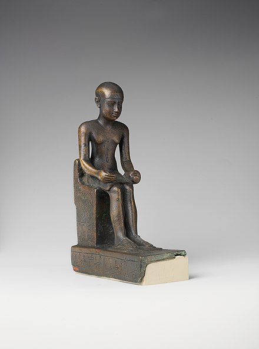

Egyptian civilization lasted for two thousand years. Besides well-known Pyramids, Egyptians also built Tombs, Temples and Palaces.
The material that they used was sunbaked mudbrick and limestone. Egyptians also had a system of Mathematics and Astronomy,
so many of their buildings where astronomically aligned.
Ancient Egypt did not have only one style in architecture.
It lasted from about 2,700 B.C.E. - 343 B.C.E.
Egyptian architecture is divided in dynasties,
which means it is also divided in certain periods:
Old Kingdom
First Intermediate
Middle Kingdom
Second Intermediate
New Kingdom
Third Intermediate
Late period
Columns
Columns were carved from stone and Egyptians tried to carve organic forms, such as lotus and palm.
They were also painted bright colors and filled with text and hieroglyphs and columns could be up to 24 metes high.
As early as 2600 BC the architect Imhotep made use of stone columns whose surface was carved to reflect the organic form of bundled reeds,
like papyrus, lotus and palm; in later Egyptian architecture faceted cylinders were also common. Their form is thought to derive from archaic reed-built shrines.
Giza pyramid complex
Giza was a town in the Middle Egypt that belonged to the period of Old Kingdom and that town has pyramid complex with over 6 pyramids.
The Great Pyramid of Giza which belonged to pharaoh Khufu and The Great Pyramid of Khafre are the biggest pyramids that exist.
Great Kings or Pharaohs were preparing to become Gods in the afterlife and they have built those pyramids for themselves.
Great Pyramid of Giza
Sphinx
Great Pyramid of Khafre
Pyramid of Menkaure
Architects
Hemiunu
Heimunu was an Architect of the great pyramid of Giza.
Hemiunu was one of the most important members of the court
and responsible for all the royal works. His tomb lies close to Khufu's pyramid.
Imhotep

Imhotep was an Egyptian chancellor to the Pharaoh Djoser,
the architect of the Djoser's pyramid,
and high priest of the sun god Ra at Heliopolis.
Today, the architecture behind Egypt civilization is a mystery
of how advanced and well-organized they were 4,500 years ago.